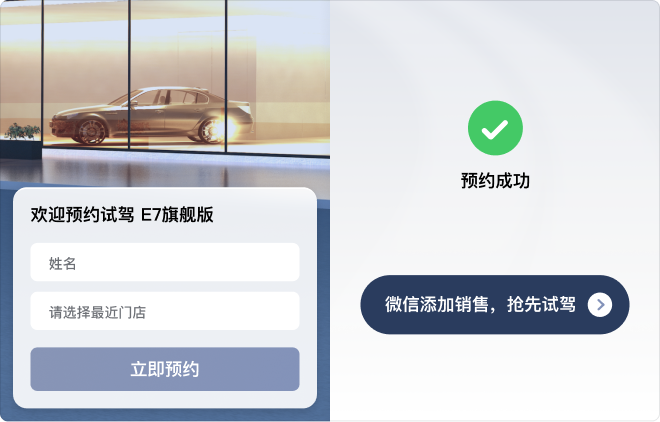
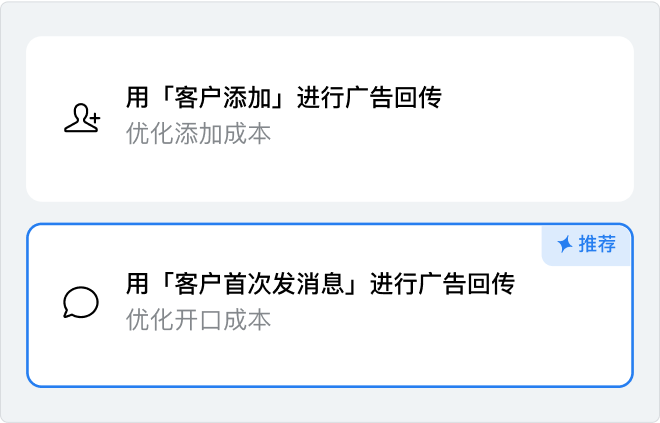
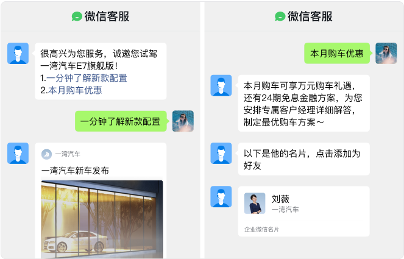

提升广告有效率的几种方式
在广告中使用获客助手时，由于链路短、转化高，可降低获客成本，但同时也因为链路短，缺少了筛客环节，会添加一些低意向客户。以下方式可帮你过滤低质线索，提升广告有效率。
通过优化广告落地页提升有效率
可在落地页进行表单收集，筛选客户意向，再引导填写完成的客户添加成员。

通过广告回传提升有效率
除了用「客户添加」这种浅层动作进行广告回传以外，还可用获客助手提供的「客户首次发消息」等后端行为进行广告回传。

通过微信客服互动问答提升有效率
可引导客户从广告进入微信客服会话，通过互动问答进一步了解产品详情，明确客户需求后发送获客链接，引导客户添加。
